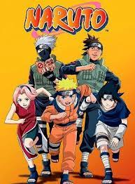

Top 10 animes em 2024
1.Demon Slayer:Kimetsu no Yaiba 6.Death Note2.Attack on Titan 7.Dragon Ball
3.One Piece 8.Fullmatal Alchemist:Brotherhood
4.Naruto 9.Tokyo Ghoul
5.Boku no Hero Academia 10.One Punch man
Demon Slayer: Kimetsu no Yaiba

1.Demon Slayer:Kimetsu no Yaiba é um anime japonês que tem conquistado uma legião de fãs em todo o mundo. Baseado no mangá de mesmo nome escrito por Koyoharu Gotouge, o anime segue a jornada de Tanjiro Kamado, um jovem bondoso que se torna um caçador de demônios após sua família ser massacrada por um demônio, com exceção de sua irmã mais nova, Nezuko, que é transformada em um demônio.
A história se desenrola enquanto Tanjiro busca vingança contra o demônio que destruiu sua família e tenta encontrar uma maneira de curar Nezuko e trazê-la de volta à sua forma humana. Ao longo do caminho, ele se junta a outros caçadores de demônios, incluindo os corajosos Inosuke Hashibira e Zenitsu Agatsuma, formando um grupo determinado a eliminar os demônios que assolam a sociedade.
O que torna "Demon Slayer: Kimetsu no Yaiba" tão especial é sua animação de alta qualidade, que é visualmente deslumbrante e repleta de ação emocionante. Além disso, a série apresenta personagens complexos e bem desenvolvidos, cada um com sua própria história e motivações, o que torna fácil para os espectadores se conectarem com eles em um nível emocional.
Recomendaria "Demon Slayer: Kimetsu no Yaiba" para qualquer amigo que goste de uma boa história de aventura, combate emocionante e uma dose saudável de emoção. É uma jornada emocionante que mistura ação, drama e fantasia de uma forma única e envolvente, capaz de cativar até mesmo aqueles que não são fãs ávidos de anime.
top 10 proximoAttack on Titan

2.Attack on Titan é uma série de mangá e anime criada por Hajime Isayama que ganhou imensa popularidade desde seu lançamento em 2009. Situada em um mundo onde a humanidade vive cercada por enormes muralhas para se proteger de gigantescas criaturas humanoides conhecidas como Titãs, a história segue Eren Yeager e seus amigos Mikasa Ackerman e Armin Arlert enquanto lutam pela sobrevivência e buscam desvendar os mistérios por trás da existência dos Titãs.
A trama começa com o rompimento da muralha que protege a última cidade humana, resultando em uma invasão dos Titãs e na perda de inúmeras vidas. Eren jura vingança contra os Titãs após testemunhar a morte de sua mãe nas mãos dessas criaturas. Ele se junta à Divisão de Exploração, uma unidade militar encarregada de investigar os Titãs além das muralhas e combater a ameaça que eles representam.
O enredo de "Attack on Titan" é conhecido por sua complexidade e reviravoltas surpreendentes, envolvendo temas como política, moralidade e a natureza da humanidade. Ao longo da história, os personagens enfrentam dilemas éticos e são confrontados com descobertas chocantes sobre a verdadeira origem dos Titãs e o mundo em que vivem.
Além disso, a série é elogiada por sua animação de alta qualidade, trilha sonora impactante e intensas cenas de ação. "Attack on Titan" conquistou uma base de fãs dedicada em todo o mundo e se tornou um fenômeno cultural, inspirando diversos produtos derivados, incluindo jogos de videogame, filmes live-action e spin-offs de mangá.
Em resumo, "Attack on Titan" é uma obra envolvente e emocionante que cativa o público com sua narrativa complexa e personagens memoráveis, enquanto explora questões profundas sobre o significado da humanidade e o preço da sobrevivência em um mundo cruel e implacável.
top 10 anterior proximoOne Piece

3.One Piece é uma saga épica de aventura que cativa os corações dos fãs de anime e mangá em todo o mundo. Criada por Eiichiro Oda, esta obra-prima narra a jornada do protagonista Monkey D. Luffy e sua tripulação de piratas em busca do lendário tesouro conhecido como One Piece, que está escondido no Grand Line, o mar mais perigoso e misterioso do mundo.
A história começa com Luffy, um jovem que sonha em se tornar o Rei dos Piratas, que parte em uma jornada para encontrar o tesouro deixado pelo lendário pirata Gol D. Roger. Luffy, dotado de poderes devido a ter consumido uma Fruta do Diabo que o transformou em um Homem Borracha, reúne uma eclética tripulação de piratas, cada um com suas próprias habilidades e sonhos, incluindo o espadachim Zoro, a navegadora Nami, o atirador Usopp, o cozinheiro Sanji, a médica Chopper, a arqueóloga Robin, o esqueleto vivo Brook, o carpinteiro Franky e a carpideira Jinbe.
Ao longo de sua jornada, eles enfrentam perigos inimagináveis, batalham contra poderosos adversários e desvendam os mistérios do mundo em que vivem. "One Piece" é conhecido por sua narrativa rica e envolvente, que mescla humor, ação, drama e momentos emocionantes. A obra também aborda temas como amizade, sacrifício, justiça e liberdade, tocando profundamente os espectadores.
O universo de "One Piece" é vasto e diversificado, repleto de ilhas exóticas, criaturas fantásticas e personagens memoráveis. Além da busca pelo One Piece, Luffy e sua tripulação enfrentam diversos desafios, incluindo o Governo Mundial, a Marinha e outros piratas poderosos, como os Yonkou, os quatro imperadores dos mares.
Com mais de 1.000 capítulos de mangá e uma adaptação para anime que continua em andamento, "One Piece" é uma saga que promete uma aventura emocionante e inesquecível para aqueles que se aventuram em suas páginas ou episódios. Se você procura uma história repleta de ação, humor e emoção, "One Piece" é uma escolha imperdível. Prepare-se para zarpar rumo a um mundo de aventuras e descobertas com Luffy e sua tripulação de piratas!
top 10 anterior proximoNaruto

4.Naruto é uma das séries de anime e mangá mais icônicas e influentes de todos os tempos, composta por duas partes distintas: "Naruto Clássico" e "Naruto Shippuden". Criada por Masashi Kishimoto, a história segue a jornada de Naruto Uzumaki, um jovem ninja que sonha em se tornar o líder de sua aldeia, o Hokage, e é ambientada em um mundo de ninjas, jutsus e batalhas épicas.
Na primeira parte, "Naruto Clássico", somos apresentados a Naruto, um garoto desajeitado e travesso que é desprezado por seus companheiros de aldeia por ser o recipiente de Kurama, o temido Demônio de Nove Caudas. Determinado a provar seu valor, Naruto se matricula na Academia Ninja e forma laços de amizade com seus colegas Sasuke Uchiha e Sakura Haruno, sob a orientação do mestre Kakashi Hatake. Ao longo do caminho, Naruto enfrenta desafios, realiza missões perigosas e aprende a importância da amizade e da perseverança.
Em "Naruto Shippuden", a segunda parte da série, acompanhamos o crescimento de Naruto e seus amigos três anos após os eventos do "Naruto Clássico". Agora adolescentes, eles enfrentam ameaças ainda maiores, incluindo a misteriosa organização criminosa Akatsuki, que busca capturar os Jinchurikis, como Naruto, para controlar os poderosos demônios que eles abrigam. Ao longo da série, Naruto se torna mais forte, desvenda segredos sobre sua família e luta para proteger aqueles que ama, enquanto busca seu objetivo de se tornar o Hokage e ser reconhecido como um verdadeiro herói.
"Naruto" é conhecido por seus personagens cativantes, como o carismático Naruto, o frio Sasuke, a determinada Sakura, e muitos outros ninjas memoráveis. Além disso, a série apresenta batalhas emocionantes e estratégicas, animação de alta qualidade e uma trilha sonora marcante que complementa perfeitamente a atmosfera da história.
Com mais de 700 episódios de anime e 72 volumes de mangá, "Naruto" é uma saga épica que cativa o público com sua narrativa emocionante, personagens bem desenvolvidos e mensagens inspiradoras sobre amizade, coragem e redenção. Se você procura uma aventura repleta de ação, comédia e drama, "Naruto" é uma escolha imperdível. Prepare-se para mergulhar em um mundo de ninjas e jutsus e acompanhar a jornada de Naruto em busca de seus sonhos e do reconhecimento que ele tanto merece.
top 10 anterior proximoBoku no Hero Academia

5.Boku no Hero Academia Se você ainda não teve a chance de explorar o universo emocionante de "Boku no Hero Academia" (também conhecido como "My Hero Academia"), prepare-se para uma jornada épica repleta de heroísmo, amizade e superpoderes emocionantes.
Criado por Kohei Horikoshi, "Boku no Hero Academia" se passa em um mundo onde quase todos possuem habilidades sobre-humanas chamadas "quirks". Desde a infância, as pessoas sonham em se tornar heróis, protegendo os inocentes e lutando contra os vilões que ameaçam a paz da sociedade.
A história segue Izuku Midoriya, um garoto comum sem nenhum poder especial, mas com um coração cheio de determinação e heroísmo. Apesar de suas limitações, Izuku aspira a se tornar um grande herói, inspirado pelo lendário All Might, o maior herói de todos os tempos.
O que torna "Boku no Hero Academia" tão cativante é a forma como aborda temas universais, como amizade, superação pessoal e a luta entre o bem e o mal. Cada personagem é único e complexo, com suas próprias motivações e desafios a enfrentar.
Além disso, a série é repleta de momentos de ação eletrizante, com batalhas épicas entre heróis e vilões que vão deixar você na ponta da cadeira. A animação é de alta qualidade, com sequências de luta fluidas e emocionantes.
Mas "Boku no Hero Academia" não se trata apenas de combates. A série também explora questões mais profundas, como o significado do heroísmo e os sacrifícios necessários para proteger aqueles que amamos.
Portanto, se você está procurando uma história emocionante e cheia de reviravoltas, não precisa procurar mais. "Boku no Hero Academia" é uma jornada que vai cativar e emocionar tanto os fãs de longa data quanto aqueles que estão descobrindo esse mundo incrível pela primeira vez. Então, junte-se a nós e embarque nesta aventura para se tornar um verdadeiro herói!
top 10 anterior proximoDeath Note

6.Death Note Se você está procurando por uma série de anime que vai desafiar sua mente e deixá-lo à beira da cadeira a cada episódio, então "Death Note" é a escolha perfeita para você. Criada por Tsugumi Ohba e Takeshi Obata, esta série é uma mistura envolvente de suspense, intriga e dilemas morais que vai deixá-lo totalmente viciado desde o primeiro episódio.
"Death Note" conta a história de Light Yagami, um estudante brilhante que, um dia, se depara com um caderno misterioso chamado "Death Note". Este caderno tem o poder de matar qualquer pessoa cujo nome seja escrito nele, desde que o usuário conheça o rosto da vítima. Fascinado pelo poder do Death Note, Light decide usá-lo para "limpar" o mundo do crime, tornando-se assim o justiceiro conhecido como "Kira".
O que torna "Death Note" tão cativante é o jogo intelectual tenso entre Light e L, um detetive genial contratado para capturar o misterioso assassino em série. À medida que os dois gênios se enfrentam em um duelo de inteligência, você será levado a questionar constantemente quem está certo e quem está errado.
Além da trama central, "Death Note" também explora temas profundos, como o significado da justiça, os limites do poder e as consequências de nossas ações. Você se encontrará refletindo sobre questões éticas e morais enquanto acompanha a jornada de Light e seus confrontos com L e outros personagens intrigantes.
A animação é impecável, com uma arte visual distinta que complementa perfeitamente o clima sombrio e tenso da série. As sequências de suspense são habilmente construídas, mantendo você na ponta do assento a cada reviravolta na trama.
Em resumo, "Death Note" é uma obra-prima do gênero de suspense psicológico, repleta de reviravoltas emocionantes e personagens complexos. Se você está pronto para uma experiência de visualização que desafia suas expectativas e o mantém intrigado do início ao fim, não deixe de conferir "Death Note". Prepare-se para uma montanha-russa emocional de tirar o fôlego que vai deixá-lo pensando por dias após terminar de assistir.
top 10 anterior proximoDragon Ball

7.Dragon Ball Se você está pronto para embarcar em uma aventura cheia de ação, humor e poderes incríveis, então "Dragon Ball" é a série perfeita para você. Criada por Akira Toriyama, esta franquia icônica conquistou fãs em todo o mundo com sua história envolvente e personagens inesquecíveis.
"Dragon Ball" começa seguindo as aventuras de Goku, um jovem ingênuo com uma força sobre-humana e uma insaciável sede de desafio. Ao longo da série, Goku e seus amigos enfrentam uma série de vilões poderosos, enquanto buscam pelas misteriosas Esferas do Dragão, que concedem ao seu possuidor um desejo quando reunidas.
A primeira série, simplesmente chamada "Dragon Ball", segue a infância e a juventude de Goku enquanto ele treina e luta para se tornar o mais forte guerreiro do universo. A série é uma mistura perfeita de comédia, ação e aventura, com momentos de tirar o fôlego e personagens carismáticos que deixam os espectadores ansiosos por mais.
"Dragon Ball Z" é a continuação direta, que segue a vida adulta de Goku e seus amigos. Nesta série, o foco muda para batalhas épicas e confrontos cósmicos, com Goku enfrentando inimigos cada vez mais poderosos, como o temido Saiyajin, Freeza e Cell. Os momentos de ação são intensos e emocionantes, mantendo os espectadores grudados na tela enquanto Goku e seus aliados lutam para proteger a Terra e o universo.
"Dragon Ball GT" continua a história após os eventos de "Dragon Ball Z", apresentando novas aventuras enquanto Goku se aventura pelo espaço em busca de Esferas do Dragão espalhadas pelo universo. Embora "GT" tenha uma recepção mista entre os fãs, ainda oferece muita ação e emoção para os entusiastas da franquia.
Mais recentemente, "Dragon Ball Super" reviveu a série com uma nova história que continua após os eventos de "Dragon Ball Z". Aqui, Goku e seus amigos enfrentam desafios ainda maiores, incluindo deuses da destruição, universos paralelos e torneios de luta de escala cósmica. A animação é vibrante e as batalhas são espetaculares, garantindo que os fãs antigos e novos sejam cativados pela série.
Em resumo, "Dragon Ball" oferece uma experiência de visualização emocionante e empolgante que cativou gerações de fãs em todo o mundo. Com sua mistura única de ação, humor e personagens memoráveis, esta série é uma obrigação para qualquer fã de anime em busca de uma aventura épica e inesquecível. Então, prepare-se para entrar no mundo de "Dragon Ball" e embarcar em uma jornada que vai levar você a lugares além da sua imaginação.
top 10 anterior proximoFullmatal Alchemist:Brotherhood

8.Fullmatal Alchemist:Brotherhood Se você está pronto para se envolver em uma história épica repleta de alquimia, aventura e dilemas morais, então "Fullmetal Alchemist: Brotherhood" é a série que você não pode perder. Esta obra-prima do anime, baseada no mangá de Hiromu Arakawa, cativa os espectadores com sua narrativa rica, personagens complexos e animação de alta qualidade.
A trama segue os irmãos Elric, Edward e Alphonse, em sua busca para restaurar seus corpos após uma tentativa de ressuscitar sua mãe usando a alquimia. Condenados a uma jornada repleta de desafios e sacrifícios, os irmãos enfrentam inúmeros obstáculos enquanto tentam encontrar a lendária Pedra Filosofal, que supostamente concede o poder de superar as leis da alquimia.
O que torna "Fullmetal Alchemist: Brotherhood" tão cativante é a maneira como ela mergulha em temas profundos e complexos, como a natureza da humanidade, as consequências de nossas ações e o valor do sacrifício. A série não tem medo de explorar questões morais difíceis, desafiando os espectadores a refletirem sobre o que realmente significa ser humano.
Além disso, os personagens de "Fullmetal Alchemist: Brotherhood" são verdadeiramente inesquecíveis. Desde os irmãos Elric até os aliados e adversários que encontram em sua jornada, cada personagem é ricamente desenvolvido, com motivações e arcos de personagens que os tornam profundamente envolventes.
A animação é espetacular, com sequências de luta emocionantes e paisagens deslumbrantes que dão vida ao mundo da série. Cada episódio é uma experiência visualmente impressionante que prende a atenção do espectador do início ao fim.
Em resumo, "Fullmetal Alchemist: Brotherhood" é uma obra-prima do anime que combina uma narrativa emocionante, personagens cativantes e animação de primeira linha para criar uma experiência que é verdadeiramente inesquecível. Se você está procurando uma série que vai mexer com suas emoções e desafiar sua visão de mundo, não procure mais. "Fullmetal Alchemist: Brotherhood" é uma jornada que vai deixar uma marca duradoura em sua alma.
top 10 anterior proximoTokyo Ghoul

9.Tokyo GhoulSe você estiver pronto para uma experiência sombria e arrepiante, "Tokyo Ghoul" é uma série que vai mexer com seus instintos mais profundos. Criada por Sui Ishida, esta obra-prima do horror psicológico mergulha os espectadores em um mundo onde humanos e ghouls, criaturas sedentas de sangue, vivem à beira de uma guerra silenciosa.
A trama acompanha Kaneki Ken, um estudante universitário comum que tem sua vida virada de cabeça para baixo após um encontro fatídico com uma ghoul. Após um acidente quase fatal, Kaneki se torna meio ghoul, meio humano, forçado a navegar entre os dois mundos enquanto luta para se manter fiel a seus princípios morais.
O que torna "Tokyo Ghoul" tão envolvente é a atmosfera sombria e opressiva que permeia cada cena. Desde os becos escuros de Tokyo até os confrontos sangrentos entre humanos e ghouls, a série mantém os espectadores à beira de seus assentos, esperando pelo próximo momento de tensão e terror.
Além disso, "Tokyo Ghoul" apresenta uma galeria de personagens complexos e multifacetados, cada um lutando com seus próprios demônios internos. Desde Kaneki, cuja jornada de autodescoberta o leva a confrontar sua própria humanidade, até os ghouls que lutam por sobrevivência em um mundo que os rejeita, cada personagem adiciona camadas de profundidade à narrativa envolvente da série.
A animação é visceral e visualmente impressionante, com sequências de ação que são igualmente belas e horripilantes. Os detalhes meticulosos na representação dos ghoul's Kagune e nas batalhas entre humanos e ghouls adicionam uma qualidade cinematográfica à série, elevando-a além das expectativas do gênero.
Em resumo, "Tokyo Ghoul" é uma jornada emocionante e perturbadora através das sombras de Tokyo, onde os horrores mais profundos da humanidade são expostos e confrontados. Se você estiver pronto para mergulhar em um mundo de terror psicológico e dilemas morais, não procure mais. "Tokyo Ghoul" é uma série que vai desafiar suas expectativas e assombrar seus sonhos por muito tempo depois que os créditos finais rolarem.
top 10 anterior proximoOne Punch man

10.One Punch man Se você está procurando uma experiência única que mistura comédia e ação de uma maneira totalmente nova, "One Punch Man" é a série que você não pode perder. Criada por ONE e ilustrada por Yusuke Murata, esta série de anime gira em torno de um herói incomum que desafia todas as convenções do gênero.
A história segue Saitama, um homem comum que, após um intenso treinamento, ganha poderes sobre-humanos e se torna um herói por diversão. No entanto, há um problema: Saitama é tão poderoso que ele derrota todos os seus inimigos com apenas um soco, deixando-o entediado e desiludido com a falta de desafios.
O que torna "One Punch Man" tão divertido é a maneira como ele subverte os tropos típicos dos animes de super-heróis. Em vez de seguir a jornada tradicional de crescimento e superação, Saitama já é o herói mais poderoso desde o início da série, levando a uma série de situações cômicas e absurdas enquanto ele tenta encontrar um oponente à altura.
Além disso, "One Punch Man" é repleto de personagens excêntricos e hilariantes, cada um com seus próprios poderes e personalidades peculiares. Desde Genos, o ciborgue determinado que se torna o discípulo de Saitama, até os vilões ridículos que ele enfrenta, cada personagem adiciona uma camada de humor à série.
A animação é espetacular, especialmente durante as sequências de luta, que são coreografadas de maneira impressionante e cheias de energia. A combinação de animação fluida e comédia visual faz com que cada episódio seja uma delícia de assistir, com momentos que vão fazer você rir alto.
Em resumo, "One Punch Man" é uma explosão de diversão e humor que vai agradar tanto os fãs de anime quanto os que estão apenas procurando por uma boa risada. Com sua abordagem única para o gênero de super-heróis e sua animação deslumbrante, esta série é uma obrigação para qualquer um que aprecie uma boa comédia de ação. Prepare-se para uma jornada hilariante e cheia de socos com "One Punch Man"!
top 10 anterior